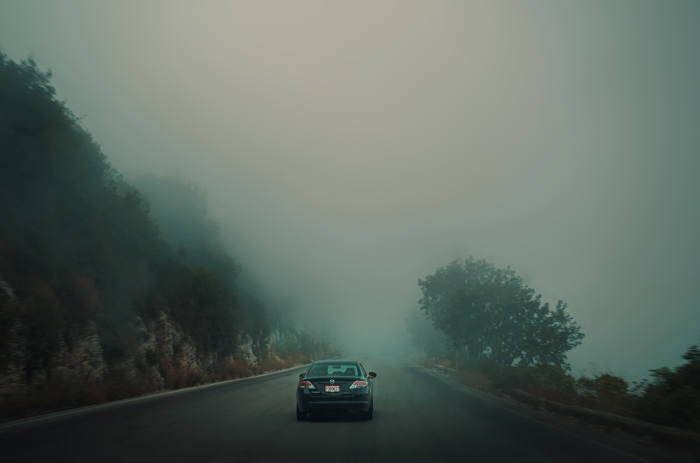
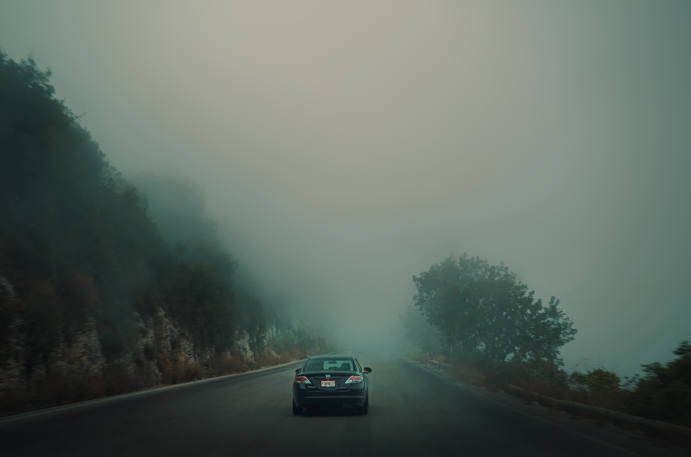

- Travel
- Maternity Shoot
- Cheerleading
- Graduation
Stepping into a realm where pixels dance with the memories of distant lands and adventures. Each photograph becomes a portal, a whisper of the world's secrets captured in frozen moments. In these images, the colors aren't just hues; they're melodies composed by nature's brush, orchestrating symphonies of awe. The vibrant streets of bustling cities pulse with the rhythm of life, while tranquil landscapes sing ballads of serenity, inviting you to lose yourself in their embrace. Every frame holds a story, waiting to be unraveled. The winding paths through ancient ruins whisper tales of civilizations long past, while the panoramic vistas from mountain peaks echo the triumph of human spirit conquering nature's grandeur. But it's not just about what meets the eye. Look closer, and you'll find emotions woven into the very fabric of each photograph. The laughter of newfound friends, the quiet contemplation of a solitary traveler, the exhilaration of stepping into the unknown—all captured in pixels, immortalized in time. These travel photos are more than just snapshots; they're windows to the soul of the world, beckoning you to explore, to dream, and to discover the extraordinary in the ordinary.

 



In each maternity photo, we encapsulate the sacred dance between woman and wonder, where curves tell stories of unseen galaxies and the gentle swell of life's grandest symphony. Here, amidst soft light and tender whispers, we freeze time to immortalize the quiet strength, the boundless love, and the silent promises exchanged between mother and the universe as they await the arrival of a new heartbeat.
A whirlwind of spirit and sparkle, the cheerleading photoshoot transforms into a symphony of athleticism and artistry. Each click of the camera captures not just poses, but the essence of teamwork, determination, and boundless energy. Amidst the vibrant colors and dazzling uniforms, the athletes morph into ambassadors of enthusiasm, their smiles radiating infectious positivity. The air crackles with anticipation as they leap, tumble, and pyramid, defying gravity with grace and precision. But it's not just about the stunts and formations; it's about the stories they tell. In every synchronized move, there's a tale of resilience, of countless hours spent perfecting routines, and of the unbreakable bonds forged through shared triumphs and setbacks. As the photographer immortalizes these moments, each frame becomes a testament to the indomitable spirit of the team—a celebration of passion, unity, and the unwavering belief that together, they can conquer any challenge.
In the tapestry of life, high school graduation stands as a milestone, a moment of transition and transformation captured in the lens of memory and immortalized through the artistry of photography. It's a symphony of emotions, from the bittersweet nostalgia of farewells to the radiant hope of new beginnings, painted against the backdrop of academic regalia and mortarboards tossed into the air like confetti. Through the lens, the essence of this pivotal moment is distilled into a series of snapshots, each frame a testament to the triumphs, challenges, and growth that have shaped the graduating class. Photography in high school graduation is a dance of contrasts, juxtaposing the solemnity of tradition with the exuberance of youth. It's in the twinkle of proud parents' eyes, the embrace of lifelong friends, and the triumphant smiles of graduates as they cross the stage to receive their diplomas that the true spirit of the occasion shines through. With each click of the shutter, the photographer captures not just a ceremony, but a rite of passage, freezing in time the culmination of years of hard work, dedication, and dreams realized. Through the lens, high school graduation becomes a mosaic of individual stories woven together into a collective narrative of resilience and achievement. Each photograph is a window into the heart and soul of the graduating class, reflecting their hopes, dreams, and aspirations for the future. It's in the candid moments between formal poses, where laughter mingles with tears and anticipation meets apprehension, that the true essence of the graduating experience is revealed, and it's these moments that the photographer seeks to preserve for posterity. Photography in high school graduation is also a celebration of community and connection, capturing the bonds that unite classmates, teachers, and families in a shared moment of pride and accomplishment. From the solemnity of the commencement address to the jubilant cheers of the crowd, each aspect of the ceremony is imbued with meaning and significance, and it's the photographer's task to capture that essence in a single frame. Through their lens, they bear witness to the culmination of years of memories, friendships, and lessons learned, serving as custodians of a legacy that will endure for generations to come. Ultimately, photography in high school graduation is a tribute to the resilience, spirit, and potential of youth. It's a reminder that, even in the face of uncertainty and adversity, the future is bright with possibility, and that each graduate carries within them the seeds of greatness waiting to blossom. With each photograph, the photographer not only documents a moment in time but also captures the essence of a generation on the cusp of greatness, poised to embark on a journey of self-discovery and fulfillment that will shape the course of their lives and the world around them.